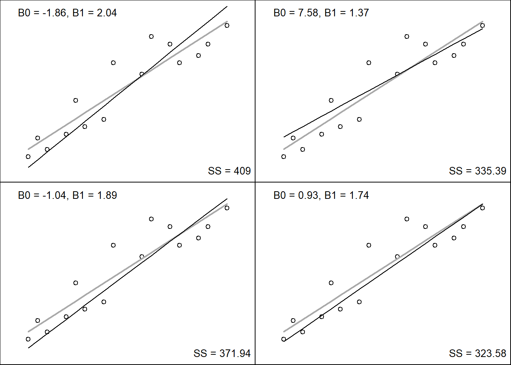

16 Bivariate Relationships
We often have information on two numeric characteristics for each member of a group and are interested in finding the degree of association between these characteristics.
For instance, an obstetrician may decide to look up the records of women who delivered in her hospital in the previous year to find out whether there is a relationship between their family incomes and the birth weights of their babies.
The relationship here means whether the two variables fluctuate together, i.e., does thebirth weight increase (or decrease) as the income increases.
Parametric approaches
- Pearson’s correlation coefficient
Nonparametric approaches
- Spearman’s rho
- Kendall’s tau
16.1 Direction of Relationships
16.1.4 Quantifying the magnitude of correlation
As one variable increases, does the other increase, decrease or not change at all (stay the same)?
This can be done by understood by calculating the covariance.
We look at how much each score deviates from their respective mean values.
If both variables deviate from the mean in a similar way, they are likely to be related (or ‘covary’).
Here is the results (bivariate) of an experiment aimed at understanding the efficacy of advertising:
| Participant number (i) | 1 | 2 | 3 | 4 | 5 | Mean | SD |
|---|---|---|---|---|---|---|---|
| Adverts Watched (X) | 5 | 4 | 4 | 6 | 8 | 5.4 | 1.67 |
| Packets Bought (Y) | 8 | 9 | 10 | 13 | 15 | 11 | 2.92 |
Residual error values:
Remember residuals are the value of the observation - expectation.
| Participant number (i) | 1 | 2 | 3 | 4 | 5 | Mean | SD |
|---|---|---|---|---|---|---|---|
| Adverts Watched | 5 | 4 | 4 | 6 | 8 | 5.4 | 1.67 |
| Packets Bought | 8 | 9 | 10 | 13 | 15 | 11 | 2.92 |
| Advertiser Residual | -0.4 | -1.4 | -1.4 | 0.6 | 2.6 | ||
| Packets residual | -3 | -2 | -1 | 2 | 4 |


16.1.5 Covariance and a re-examination of variance
Remember the variance tells us how much scores deviate from the mean for a single variable.
It is closely linked to the sum of squares, indeed we use the sum of squares to calculate the variance.
Covariance is similar - it tells is by how much scores on two variables differ from their respective means.
\(s^2=\frac{\Sigma(X_i - \bar{X})}{n-1}^2\)
\(s^2=\frac{\Sigma(X_i - \bar{X})(X_i - \bar{X})}{n-1}\)
16.1.6 Here we are examining the ‘covariance’ so the calculation changes a bit.
Calculate the error (residual value) between the mean and each subject’s score for the first variable (X).
Calculate the error (residual value) between the mean and their score for the second variable (y).
Multiply the error values (the residual values).
Add these values and you get the cross product deviations.
The covariance is the mean (average) of the cross-product deviations:
\(cov(X,Y)=\frac{\Sigma(X_i - \bar{X})(Y_i - \bar{Y})}{n-1}\)
From our example, and plugging in the values:
\(cov(X,Y)=\frac{(-0.4)(-3)+(-1.4)(-2)+(-1.4)(-1)+(0.6)(2)+(2.6)(4)}{4}\)
\(cov(X,Y)=\frac{1.2+2.8+1.4+1.2+10.4}{4}\)
\(cov(X,Y)=\frac{17}{4}\)
\(cov(X,Y)=4.25\)
16.2 Limitations of Covariance
The magnitude of the covariance is dependent on the units of measurement.
e.g. the covariance of two variables measured in miles might be 4.25, but if the same scores are converted to kilometres, the covariance is changed…
To address this issue we can standarize the covariance value by standardization: Divide by the standard deviations of both variables. The standardized version of covariance is known as the correlation coefficient. It is unaffected by units of measurement.
16.3 The Correlation Coefficient
\(r=\frac{cov_{X,Y}}{s_Xs_Y}\)
\(r=\frac{\Sigma(X_i - \bar{X})(Y_i - \bar{Y})}{(n-1)s_Xs_Y}\)
\(r=\frac{cov_{XY}}{s_Xs_Y}\)
\(r=\frac{4.25}{1.67 * 2.92}\)
\(r=0.87\)
Termed Pearson-product moment correlation coefficient
It ranges between -1 and +1
- A value of zero, indicates that there is no relationship
It is a testable hypothesis
Testing \(H_0: \rho=0\) versus \(H_A: \rho\ne0\)
The standard error of the correlation coefficient is calculated as:
\(S_r=\sqrt\frac{1-r^2}{n-2}\)
It is a testable hypothesis
r = 0.870
n = 12 (new data set, with more samples)
We will calculate the critical value:
\(t=\frac{r}{S_r}= \frac{0.870}{0.156}= 5.58\)
t0.05(2),10 =2.228
Testing \(H_0: \rho=0\) versus \(H_A: \rho\ne0\)
Coefficient of determination, r^2
- By squaring the value of r you get the proportion of variance in one variable shared by the other.
Square of correlation coefficient (\(r^2\)), known as coefficient of determination, represents the proportion of variation in one variable that is accounted for by the variation in the other variable.
For example, if height and weight of a group of persons have a correlation coefficient of (\(\rho = 0.80\)), one can estimate that 64% (0.80 × 0.80 = 0.64) of variation in their weights is accounted for by the variation in their heights.
16.4 Non-parametric Correlation
The Spearman’s Rank Correlation Coefficient is used to discover the strength of a link between two sets of data.
This worked example is taken from: https://geographyfieldwork.com/SpearmansRank.htm. I found it to be a very elegant and real world example. There is also the case of tied ranks in this example, which is useful.
Hypothesis:
We might expect to find that the price of a bottle of water decreases as distance from the Contemporary Art Museum (tourist area) increases. Higher property rents close to the museum should be reflected in higher prices in the shops.
The hypothesis might be written like this:
The price of a convenience item decreases as distance from the Contemporary Art Museum increases.
Note in the column “Rank Price” there is no rank 3 or 4. In this case of the tied ranks
| Store | Distance (m) | Rank distance | Price | Rank price | Difference between ranks (d) | d x d |
|---|---|---|---|---|---|---|
| 1 | 50 | 10 | 1.80 | 2.0 | 8.0 | 64.00 |
| 2 | 175 | 9 | 1.20 | 3.5 | 5.5 | 30.25 |
| 3 | 270 | 8 | 2.00 | 1.0 | 7.0 | 49.00 |
| 4 | 375 | 7 | 1.00 | 6.0 | 1.0 | 1.00 |
| 5 | 425 | 6 | 1.00 | 6.0 | 0.0 | 0.00 |
| 6 | 580 | 5 | 1.20 | 3.5 | 1.5 | 2.25 |
| 7 | 710 | 4 | 0.80 | 9.0 | -5.0 | 25.00 |
| 8 | 790 | 3 | 0.60 | 10.0 | -7.0 | 49.00 |
| 9 | 890 | 2 | 1.00 | 6.0 | -4.0 | 16.00 |
| 10 | 980 | 1 | 0.85 | 8.0 | -7.0 | 49.00 |
Next, we will calculate the coefficient (\(R_s\)) using the formula below. The answer will always be between 1.0 (a perfect positive correlation) and -1.0 (a perfect negative correlation).
\(R_s = 1 - \frac{6\Sigma{d^2}}{n^3-n}\).
Now to put all these values into the formula.
- Find the value of all the \(d^2\) values by adding up all the values in the difference² column.
- In our example this is 285.5.
- Multiplying this by 6 gives 1713.
- Now for the bottom line of the equation. The value n is the number of sites at which you took measurements. This, in our example is 10. Substituting these values into n³ - n we get 1000 - 10
- We now have the formula: \(R_s = 1 - \frac{1713}{990}\), which gives a value for R: 1 - 1.73 = -0.73
The closer (\(R_s\)) is to +1 or -1, the stronger the likely correlation. A perfect positive correlation is +1 and a perfect negative correlation is -1. The Rs value of -0.73 suggests a fairly strong negative relationship.
Now, let’s determine if this calculated value is signifcantly different from zero.
We will use the Student’s t-distribution. Similar to Pearson’s coefficient, the t-value is found by:
\(t = R_s\sqrt{\frac{n - 2}{1 - {R_s}^2}}\)
\(t_{calc} = -0.73\sqrt{\frac{8}{1 - ({-0.73})^2}}\)
\(t_{critical} = t_{\alpha = 0.05, df = 9} = 2.262\), this is Table B.3 in Zar 4th edition (Critical Values of the t distribution).
So, we would reject the null hypothesis,